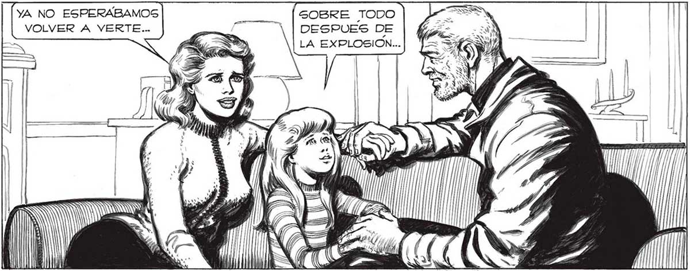
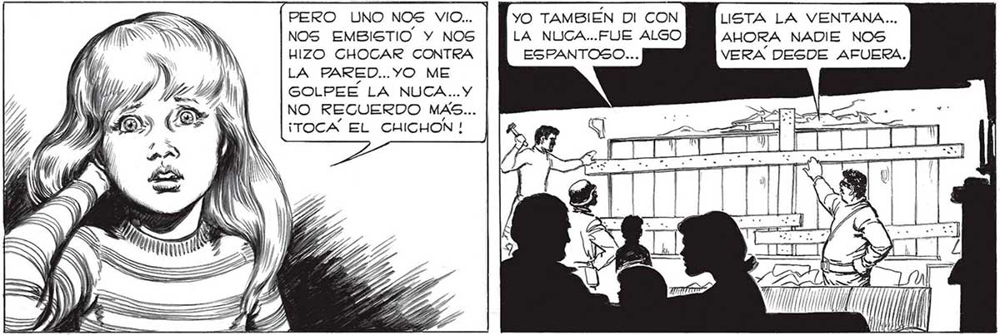

306 LOS RECUERDOS SE ME ACLARAN, SE ME HACEN OTRA VEZ NITIDOS, CUANDO EVOCO LA EMBRIAGUEZ QUE SENTI” CUANAGISTÍ A LOS ESFUERZOS DO ME SORPRENDI OYEN DE FAVALLI DOLAS HABLAR. Y LOS OTROS PARA HACERLAS REACCIONAR; NI SÉ AHORA SI YO AYUDE O NO. YA NO ESPERABAMOS SOBRE TODO VOLVER A VERTE... ] DESPUES DE > SM LA EXPLOSION... POR LA VENTANA HABLAMOS VISTO LOS MONSTRUOS NEGROS. PERO SALIMOS _ É e) AAA IV SS IN GA PERO UNO NOS VIO... | NOS EMBISTIO. Y NOS HIZO CHOCAR CONTRA LA PARED...YO ME GOLPEE LA NUCA... Y NO RECUERDO MAS... ¡TOCA EL CHICHON ! YA TOTALMENTE REPUESTAS, MADRE E HIJA SE ATROPELLABAN PFARA CONTARME TODO... ESTABAN RADIANTES... PENSAMOS QUE LUEGO DE SEMEJANTE EXPLOSION YA NADIE VIVIYO TAMBIEN DI CON LA NUCA...FUE ALGO ESPANTOSO... ..LOCAS DE CONTENTO POR TENERME OTRA VEZ CON ELLAS. TODO EL HORROR QUE NOS RODEABA DESAPARECIA, LO ÚNICO QUE CONTABA ERA SABER QUE DE NUEVO ESTABAMOS JUNTOS... JUNTOS! POR ESO SALIMOS... QUERIAMOS ESCAPAR... ANS NW / í Y | ( W N 11 / LISTA LA VENTANA... AHORA NADIE NOS VERA DESDE AFUERA.

